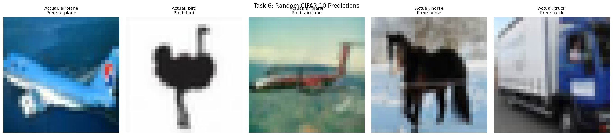
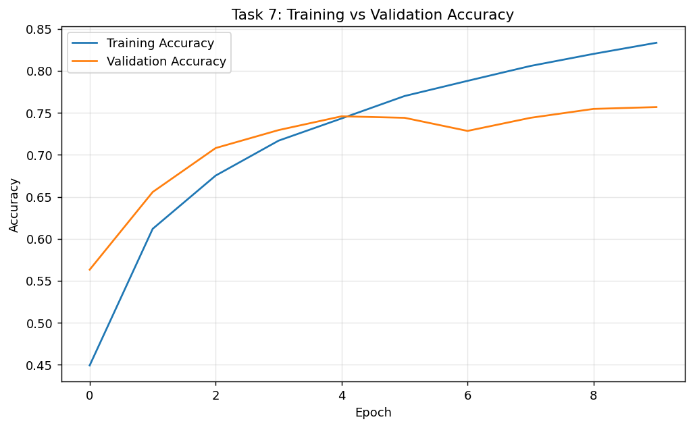
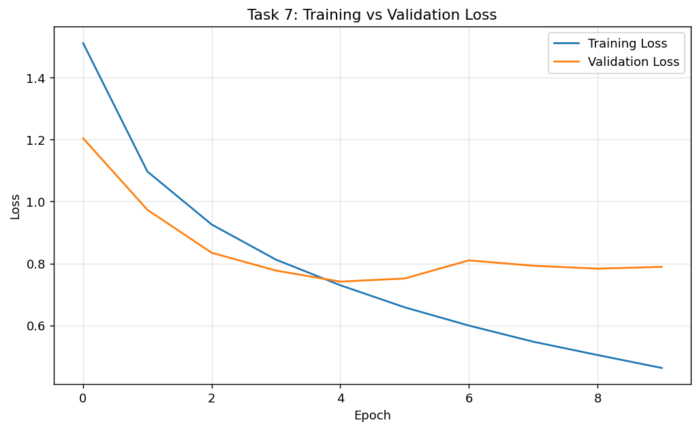
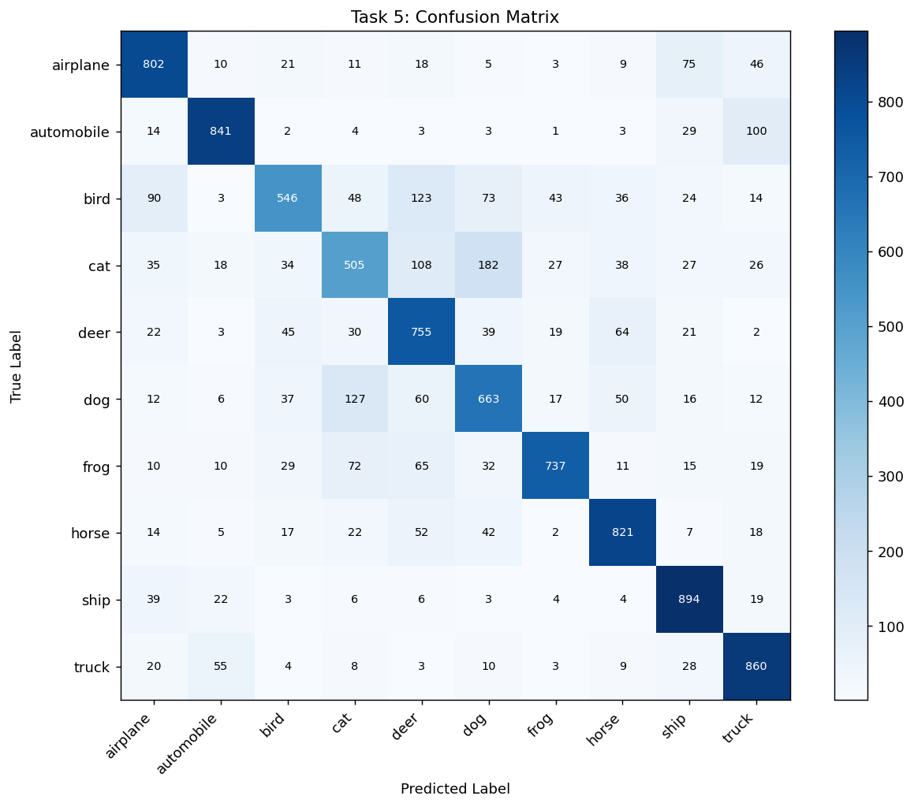

Technical Report
Objective
Design a binary classifier that predicts Crack Present or No Crack from concrete images collected from bridges, buildings, and transmission towers, while handling strong overfitting risk in a 1,200-image scenario.
Dataset and Preprocessing
- Binary setup with 1,200 total images (balanced classes).
- Input resized to 128 x 128.
- Train/validation/test split: 70/15/15.

Part 1 - Baseline CNN (From Scratch)
Architecture: Conv-ReLU-MaxPool, Conv-ReLU-MaxPool, Dense head, sigmoid output. Training length: 15 epochs.
Train Accuracy: 0.963
Validation Accuracy: 0.701
Overfitting Gap: 0.262
The large gap confirms overfitting. Small dataset size limits pattern diversity, so the model learns sample-specific textures rather than stable crack signatures.
Part 2 - Transfer Learning (Frozen Backbone)
MobileNetV2 was loaded with ImageNet weights and frozen using base_model.trainable = False.
- Mathematical effect: base weights are constant during optimization (delta theta_base = 0).
- Reason updates stop: optimizer only updates variables marked trainable in the computational graph.
Part 3 - Data Augmentation
Augmentations used: RandomRotation, RandomZoom, RandomFlip, RandomContrast. Validation improved due to stronger invariance to camera angle, scale, and lighting shifts.
Part 4 - Fine-Tuning
The last 20 layers were unfrozen and trained with Adam(1e-5) for 5 additional epochs.
- Low learning rate protects pretrained representations.
- If LR is high, catastrophic forgetting can reduce validation quality.
Model Comparison
| Model | Train Acc | Val Acc | Overfitting Gap | Status |
|---|---|---|---|---|
| CNN Scratch | 0.963 | 0.701 | 0.262 | Overfitting |
| Transfer (Frozen) | 0.879 | 0.846 | 0.033 | Stable |
| Transfer (Fine-tuned) | 0.907 | 0.896 | 0.011 | Best |

Required Training Curves


Part 5 - Padding Analysis

Border pixels can contain crack edges. same padding preserves spatial context near boundaries; valid reduces map size and may remove edge details too early.
Final Evaluation
| Metric | Value |
|---|---|
| Accuracy | 0.901 |
| Precision | 0.886 |
| Recall | 0.926 |
| F1-score | 0.906 |

Why Recall Matters
Recall is critical because missed cracks (false negatives) are dangerous in civil infrastructure assessment. A high recall model minimizes the chance of undetected structural damage.
Conclusion
Transfer learning delivered significantly better generalization than scratch CNN for a small UAV inspection dataset. Augmentation and selective fine-tuning controlled overfitting while improving validation and final test performance.